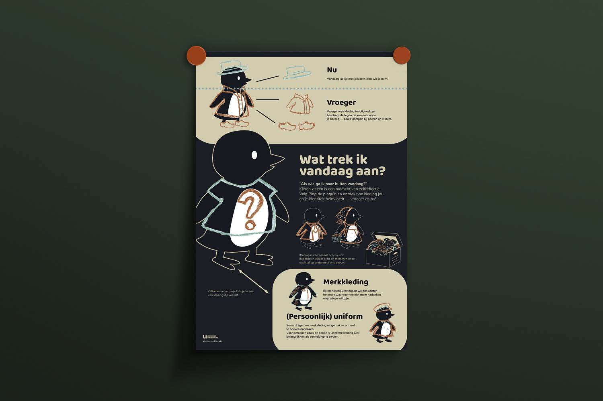
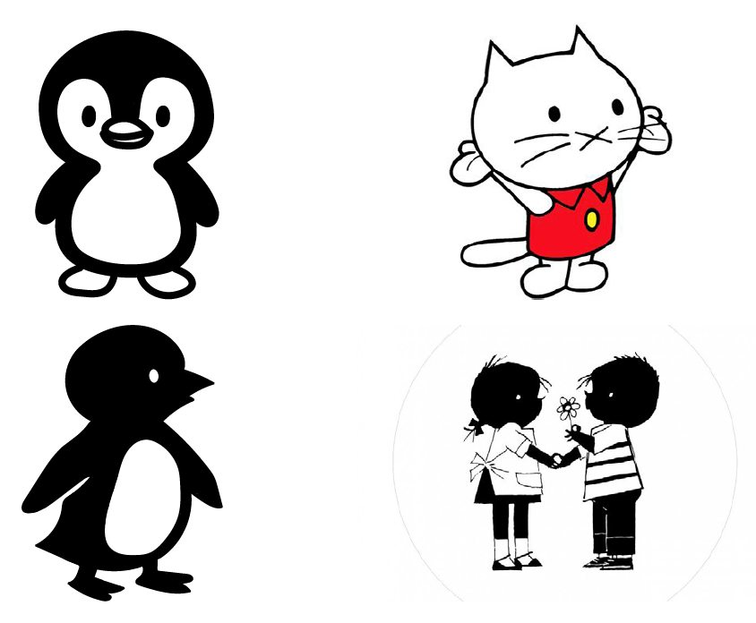
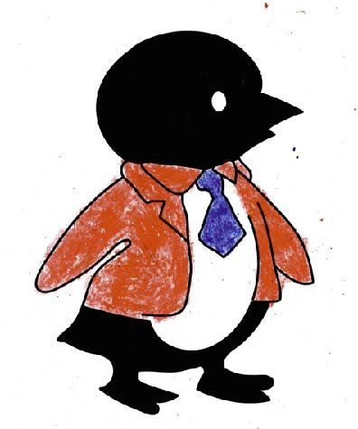
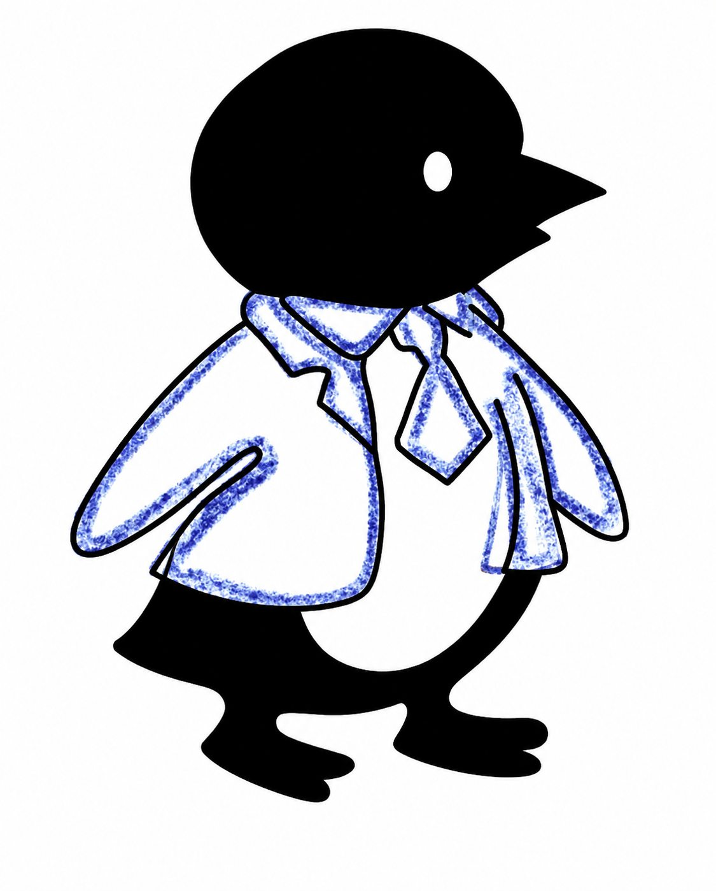

Dressed to impress: A penguin's Story!
I transformed a complex scientific topic about clothing into a playful and accessible A3 infographic for children. Through colourful penguin illustrations, thoughtful colour choices and visual storytelling, I made scientific information fun and easy to understand!
- Role
- Graphic designer & illustrator
- Client
- Hans Temmerman
- Tools
- Adobe Illustrator, Adobe Photoshop
The challenge
For this project, the challenge was to translate scientific information into a visually engaging and accessible A3 infographic.
We could choose from five scientific topics, and I selected “Your clothes say more about you than you think.”
The goal was to identify the key insights from the video and communicate them through a strong combination of illustrations, typography and concise text. The infographic needed to capture attention while making complex information easy to understand.
An important part of the brief was to create a cohesive visual language, with careful attention to composition, hierarchy, colour and scalability. All illustrations and visual elements had to be created from scratch, without using stock images, AI-generated visuals or standard icons.
My approach
How do you make a complex scientific topic understandable, engaging and memorable for children?
That became the central question guiding my design process.
I approached the brief by looking at the information through the eyes of my target audience. Children process information differently from adults, so I wanted to go beyond simply shortening the text. My goal was to turn complex scientific insights into a visual story that sparks curiosity and is easy to remember.
I started by identifying the key messages and deciding which information could be communicated through playful illustrations and which needed a short, clear explanation.
By combining recognisable imagery, accessible language and a clear visual hierarchy, I wanted to make the subject feel approachable rather than overwhelming.
Every design choice had a purpose: attracting attention, making information easier to understand and helping the message stick.
For me, the real challenge wasn't just making science look appealing. It was about making something complicated feel simple, without losing its meaning.
The concept
A little penguin with a big story to tell!
The idea was simple: dress up penguins to explain what our clothes say about us! ;)
Inspired by the nostalgic illustration style of Jip and Janneke, I created a playful penguin that takes on different looks through clothing.
By giving the penguin different outfits, I could turn a complex scientific topic into a visual story that children can easily follow, understand and remember.
Who knew dressing up penguins could be educational? ;)
Finding the right illustration style
My first step was to explore how I could make the infographic more playful and appealing to children. That's when I came up with the idea of a penguin as a friendly guide, helping children discover and understand the information.
I explored two different illustration styles: Musti and Jip and Janneke. Both have a simple, recognisable visual language that appeals to children.
In the end, I chose to continue with the illustration style of Jip and Janneke. Its nostalgic charm brings a sense of familiarity, while its simplicity helps keep the focus on the information.
This style also fitted my concept perfectly. By dressing up the penguin in different outfits, I could make the scientific information more visual and easier for children to understand. Instead of simply reading about what clothing communicates, children could actually see the differences through the penguin's outfits. This made the message clearer, more relatable and easier to remember.
This way, the penguin became more than just a cute character. It became a playful storytelling tool that helps children learn and remember.

Dressing up the penguin
Now came the fun part: how was I going to dress up my penguin?
I started by experimenting with wax crayons to give the clothing a playful texture and make the outfits stand out from the penguin's black-and-white body.
I tested two approaches: colouring in the clothes completely or using only the outlines. In the end, I chose to keep just the outlines, as this created a cleaner, less cluttered look while still adding a playful touch.
The next challenge was figuring out how to make the clothes look like the penguin was actually wearing them.
After experimenting with different approaches, I discovered that drawing each piece of clothing separately and combining them with the penguin in Photoshop gave the best result.
This allowed me to position each garment more naturally and create a more convincing look. Without this approach, the clothes appeared to be placed on top of the penguin rather than actually being worn.
Sometimes, the smallest design decisions make the biggest difference!


Choosing the right colours
Bright colours with a little meaning behind them! ;)
I chose a playful colour palette to capture children's attention and make the infographic visually engaging. Bright, vibrant colours help important information stand out and can make it more memorable for children.
But the colours weren't just chosen for their brightness. Each colour also brings its own meaning and emotion to the design.
- Orange: Represents energy, enthusiasm and curiosity. Its vibrant appearance immediately grabs attention.
- Turquoise: Adds freshness, creativity and playfulness, making the design feel lively and inviting.
- Beige: Brings warmth, softness and calmness, creating a gentle balance with the brighter colours.
- Dark blue: Represents trust, stability and clarity, giving the design a strong visual foundation.
The contrast between the black-and-white penguin illustrations and the vibrant accent colours was a deliberate design choice. The simplicity of the black-and-white illustrations allows the orange and turquoise to really stand out, while the softer beige and darker blue create balance.
By using these accent colours strategically, I wanted to draw children's attention to important details and create visual elements that stick in their minds.
The result? A playful balance between simplicity and colour, making the information easier to follow, recognise and remember.
Colour palette
- Orange
#FA6226 - Turquoise
#3BCEC6 - Beige
#E5C8AB - Dark blue
#10252D
Typography
Playful meets readable!
For my typography, I chose Baloo 2 for its playful, friendly and approachable appearance. It adds a touch of personality while keeping my headings easy to read.
For the body text, I went with Nunito Sans, a clean and highly readable typeface that makes longer texts comfortable to read.
Together, they create a balance between playfulness and readability, reflecting my personality while keeping accessibility at the heart of my design!
Typefaces
- Wat trek ik vandaag aan?
- Baloo 2, headings
- Kleren kiezen is een moment van zelfreflectie.
- Nunito Sans, body text